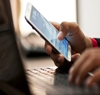

Os 7 melhores apps para baixar música no Android
Postado em 25/07/2017O mercado de música vem mudando rapidamente nos últimos anos, com o advento dos serviços de assinatura que oferecem uma vasta coleção de canções por um preço pago mensalmente. Porém, baixar música para o celular ainda é uma atividade comum no Brasil. Por isso, compilamos uma lista com alguns dos melhores programas do gênero para você buscar novas músicas em seu aparelho e fazer o download de todas elas. Alguns aplicativos ainda permitem rodar as músicas online, economizando espaço – mas gastando sua banda de internet, caso você esteja em uma conexão móvel. Confira!
Postado por Renan MarquesIMEI: aprenda a bloquear o aparelho celular em caso de roubo
Postado em 25/07/2017 Os brasileiros adoram celulares e aos poucos já estão substituindo outras tecnologias pelos aparelhos portáteis. A maior prova disso é o número de aparelhos em atividade no país em dezembro de 2015: aproximadamente 257,8 milhões — isso mesmo, mais de um por habitante. Os telefones portáteis conquistaram muitos adeptos, hoje são quase da família e guardam muitos dos nossos segredos. Clique e confira como evitar isso.
Postado por Renan Marques